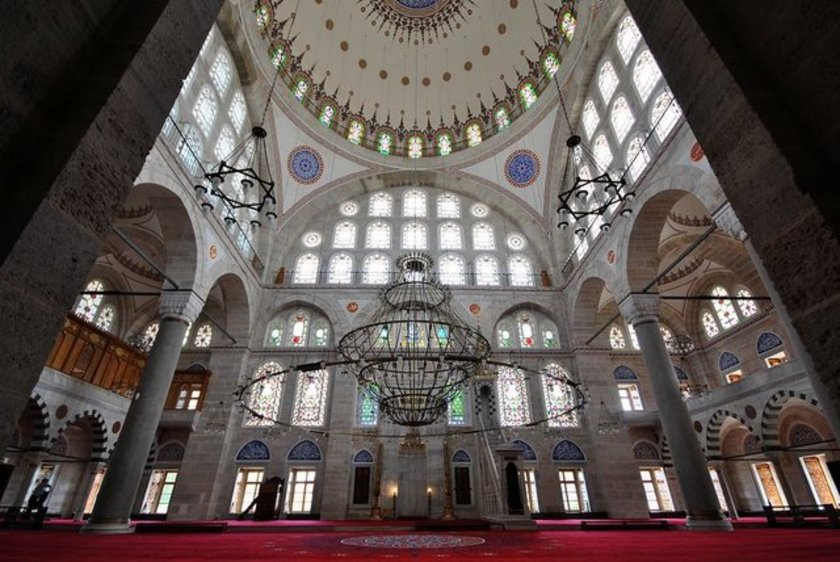

Mihrimah Sultan Camii
AçıklamaMihrimah Sultan Camii, Üsküdar iskele meydanında Kanuni Sultan Süleyman'ın kızı Mihrimah Sultan için Mimar Sinan'a yaptırdığı camidir. Ayrıca Mimar Sinan'ın erken dönem eserlerindendir. Kubbesi üç yanından yarım kubbelerle desteklenmiştir, ama ön cephede yarım kubbe yoktur.Nisan ve Mayıs aylarında Bayezid yangın kulesinden veya o bölgedeki yüksek bir noktadan İskele Camii'sine doğru bakıldığında; sabah gündoğumunda İskele Camii'nin iki minaresi arasından güneşin doğuşu ve akşam gün batımında ise (Hicrî takvime göre her ayın 14'ünde) ayın doğuşu izlenebilmektedir. Aynı kuleden batı ufkuna Edirnekapı istikâmetine doğru bakılır ise; Mihr-î Mah Sultan Edirnekapı Külliyesi'nde de, sabah ayın akşam da güneşin batışı izlenebilmektedir. Onun için Mihr-î Mah Güneş ve Ay manasına gelmektedir. Caminin kubbesi on metre çapındadır. Tek şerefeli iki minaresi, mukarnaslı mihrabı ve mermerden minberi klasik mimarinin en güçlü biçimlerini yansıtır. Cami Anadolu yakasındaki mimarinin önde gelen ve geçmişin izlerini taşıyan sayılı eserden biridir. Son cemaat bölümünü dolanan revakla ayrı bir estetik görünüme kavuşan yapının denize bakan tarafında, yirmi köşeli mermer bir şadırvan bulunur. Caminin avlusu diğer tarihi camilere göre önden küçüktür. Sağ yanda ve kıble duvarı tarafında genişçe bir alan vardır. Cami iskele tarafından bakıldığında konmuş bir kartal silueti gibidir. Şadırvan tarafı avlunun bir kısmı son cemaat yerine ilave edilerek denizden gelecek rüzgara karşı korunmalı şekilde yapılmıştır. Külliyenin diğer bölümlerinin birçoğu günümüze ulaşamamıştır. Külliyenin On altı odadan oluşan ve günümüzde sağlık merkezi olarak kullanılan medresesi; Mihrimah Sultan'ın iki oğluna, Rüstem Paşa'nın oğlu Osman Ağa'ya ve Kaptan-ı Derya Sinan Paşa'ya ait türbeler günümüze ulaşan yapılardır. Günümüze ulaşan külliye içindeki bir diğer yapıysa Sıbyan Mektebi'dir. Sıbyan Mektebi kubbeli bir sundurmadan ve bir dershaneden müteşekkildir. Tabhane 1772 yılındaki yangından sonra yok olmuş, Külliye Hanı'nın ve İmareti'nin kalıntıları tamamıyla silinmiştir.
|
|  |
|
Açılış tarihi: 1570 Mimar: Mimar Sinan Mimari tarzlar: Bizans Mimarisi, Osmanlı Mimarisi Maddeler: Granit, Mermer |
|
|
Adres: Karagümrük, 34091 Fatih/İstanbul |
|
|
Kapalı Günler Yok |